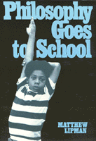

<body bgcolor="#FFFFFF" text="#000000" link="#0000FF" vlink="#CC0000" alink="#CC0000"><center><hr width="350" size="1" align="center" noshade>Lipman examines the impact his program has had and may yet have on the process of education in philosophy<hr width="350" size="1" align="center" noshade><p><a href="https://cdcshoppingcart.uchicago.edu/Cart/ChicagoBook.aspx?ISBN=9780877225379&&PRESS=temple" target="_top">Buy this book!</a> | <a href="https://cdcshoppingcart.uchicago.edu/Cart/Cart.aspx?PRESS=temple" target="_top">View Cart</a> | <a href="https://cdcshoppingcart.uchicago.edu/Cart/Cart.aspx?PRESS=temple" target="_top">Check Out</a></p><p></p></center><!--none//--><h1>Philosophy Goes to School</h1>
<h3>Matthew Lipman</h3>
<P>cloth 0-87722-537-0 $57.50, Apr 88, <FONT COLOR=#990033>Out of Stock Unavailable</FONT>
<br>paper 0-87722-555-9 $31.95, Apr 88, <FONT COLOR=#990033>Available</FONT>
<br>Electronic Book 1-43990-418-9 $31.95 <FONT COLOR=#990033>Out of Stock Unavailable</FONT>
<BR> 250 pp
</P><BLOCKQUOTE><I>"</I>Philosophy Goes to School<I> presents the subtle but significant changes in Lipman’s thought as he continues his pioneering work in developing curricular material that encourages and enables children to participate in the philosophical enterprise."</I>
<br>&#151<b>Tony W. Johnson</b>, University of Texas, San Antonio<I></I></BLOCKQUOTE>
<p>Ten years ago <I>Philosophy in the Classroom</I>, by Lipman, Sharp, and Oscanyan, hailed the emergence of philosophy as a novel, although in some ways highly traditional, elementary school discipline. In this sequel, Matthew Lipman examines the impact that elementary school philosophy has had, and may yet have, upon the process of education. Going beyond his earlier work to describe the contribution that training in philosophy can make in the teaching of values, he shows the applications of ethics in civics education and the ways in which aesthetics can be incorporated into areas of the curriculum related to the development of creativity.
<p>Making reference to the contemporary educational scene, Lipman compares the K-12 Philosophy for Children curriculum to the many unsatisfactory solutions being offered in our current drive for educational excellence. He addresses the relationship of elementary school philosophy to educational reform in the areas of science, language, social studies, and writing. And he shows how philosophy can be instrumental in the difficult task of teaching values to children while avoiding both ideological indoctrination and mindless relativism.
<BR>&nbsp;<h2>Reviews</h2>
<p><I>"In this clearly written book, Professor Lipman makes a compelling case for including philosophy in the elementary school curriculum. As is usual with his writings, it is insightful about how to relate much of traditional philosophical thought to working with children. This book is a necessary complement to </I>Philosophy in the Classroom<I>, particularly in terms of aesthetic creativity."</I>
<br>&#151<b>William S. Hamrick</b>, Southern Illinois University
<BR>&nbsp;<H2>About the Author(s)</H2>
<P><b>Matthew Lipman</b>, Professor of Philosophy at Montclair State College and Director of the Institute for the Advancement of Philosophy for Children, is co-author of <I><a href="209_reg.html" target="_top">Philosophy in the Classroom</a></I> and <I>Growing Up with Philosophy</I> (both published by Temple).</P>
<BR><H2>Subject Categories</H2>
<p><A HREF="/tempress/philosophy.html" TARGET="_top">Philosophy and Ethics</a>
<BR><A HREF="/tempress/education.html" TARGET="_top">Education</a>
</p>
<p align="center"><a href="https://cdcshoppingcart.uchicago.edu/Cart/ChicagoBook.aspx?ISBN=9780877225379&&PRESS=temple" target="_top">Buy this book!</a> | <a href="https://cdcshoppingcart.uchicago.edu/Cart/Cart.aspx?PRESS=temple" target="_top">View Cart</a> | <a href="https://cdcshoppingcart.uchicago.edu/Cart/Cart.aspx?PRESS=temple" target="_top">Check Out</a></p><p><font face="Arial" size="1"><a href="copyright.html" onMouseOver="window.status='Web Copyright Policy';return true;" onMouseOut="window.status=''" title="Web Copyright Policy">&copy;</a> 2015 <a href="http://www.temple.edu" target="new" onMouseOver="window.status='Link to Temple University home page';return true;" onMouseOut="window.status=''" title="Link to Temple University home page">Temple University</a>. All Rights Reserved. http://www.temple.edu/tempress/titles/561_reg.html</font></p>